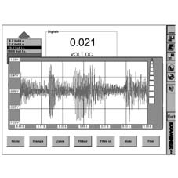
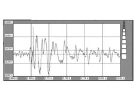
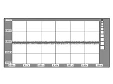
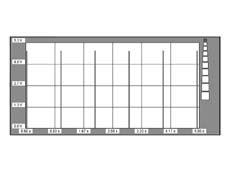
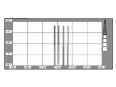

5580PH CHECK OPERATION OF CD CHANGER MODULE AND RADIO MODULE
- Path
- Test > 55 ELECTRICAL EQUIPMENT > 5580 SPECIAL ACCESSORIES > 5580P CONNECT PANEL > 5580PH CHECK OPERATION OF CD CHANGER MODULE AND RADIO MODULE
- Kind
- test / check procedure
- Applies to
- all engines; all production periods
- Interactive page
- https://sloeber94.github.io/elrnDB-aGt/en/#/125000809
Applies to: all engines; all production periods
To carry out this test correctly any music Compact Disc must be inserted in the holder in the luggage compartment on the oddments housing side (correctly positioned).
It is also necessary to remove the radio
Op. 5570T80 CAR RADIO UNIT - R+R
and CD-Changer
Op. 5570T85 CD/AUDIO PLAYER LOADER - R R
from their housings, in order to be able to work on the connectors to check that the power supply and the signals are being correctly transmitted.
Supply check
Connect the Examiner negative power supply terminal to the vehicle earth and switch on the diagnostic equipment
Enter the Voltmeter ambient and connect the voltmeter cable (black probe) to the vehicle chassis.
Switch on the radio and connect the red voltmeter probe to the supply leads, positive first and then negative, at the radio output and check that the supply for the CD-Changer is correct.
CD-Changer output signal check
After having selected a music Compact Disc track, position the red voltmeter probe alternately at the CD-Changer output signal leads (pins 19 and 20,
). Select 20 Volt end of scale and 5 seconds on the Examiner (Voltmeter ambient).
Bend the Start button and carry out the acquisition: the values obtained should be similar (with a 20% tolerance) to those in the diagram below.

When zooming into the signal, the graph voltage should be similar to that below.

If the signal is similar to the one illustrated in the diagram, this means that the CD-Changer is sending the signals correctly to the radio. Continue with checking the radio input signal.
If this is not the case, check that the signal is not similar to the one shown in the diagram below.

This signal means that the wiring entering the pin is earthed, otherwise continue with checking the CD-Changer input signal.
CD-Changer input signal check
Position the red voltmeter probe alternately at the CD-Changer input signal leads (pins 13 and 14,
).
Select 20 Volt and 5 seconds as the end of scale on the Examiner (voltmeter ambient).
Bend the Start button and carry out the acquisition: the values obtained should be similar (with a 20% tolerance) to those in the diagram below.

The sequence of peaks is not sufficiently important. To improve the display, show a single pulse using the zoom: the graph should be similar to the following image.

If the signal is similar to the one shown in the diagram, this means that the CD-Changer is receiving the signals from the radio correctly, but is not managing to transmit a response signal to the radio. The CD-Changer is broken.
If this is not the case, check that the signal is not similar to the one shown in the diagram below.
This signal indicates that the wiring entering the pin is earthed, otherwise check the output signal from the radio.
Radio output signal check
Position the red voltmeter probe alternately at the radio output signal leads (pins 13 and 14 of connector E,
).
Select 20 Volt and 5 seconds as the end of scale on the Examiner (voltmeter ambient).
Bend the Start button and carry out the acquisition: the values obtained should be similar (with a 20% tolerance) to those in the diagram below.
If the signal is similar to the one shown, this means that the radio is transmitting the enabling signal correctly to the CD-Changer, but the latter is not receiving it. The wiring is faulty.
If this is not the case, check that the signal is not similar to the one shown in the diagram below.
This signal means that the wiring entering the pin is earthed, otherwise the radio is broken.
Radio input signal check
Position the red voltmeter probe alternately on the radio audio input leads alternately (pins 19 and 20 of connector E,
).
Select 20 Volt and 5 seconds as the end of scale on the Examiner (voltmeter ambient).
Bend the Start button and carry out the acquisition: the values obtained should be similar (with a 20% tolerance) to those in the diagram below.
If the signal is similar to the one shown, this means that the radio is receiving the signals correctly from the CD-Changer, but is not able of reproducing them. The radio is broken.
If this is not the case, check that the signal is not similar to the one shown in the diagram below.
This signal indicates that the wiring entering the pin is earthed, otherwise the CD-Changer is transmitting the signal correctly to the radio, but the latter is not receiving it. There are different types of problems with the wiring.